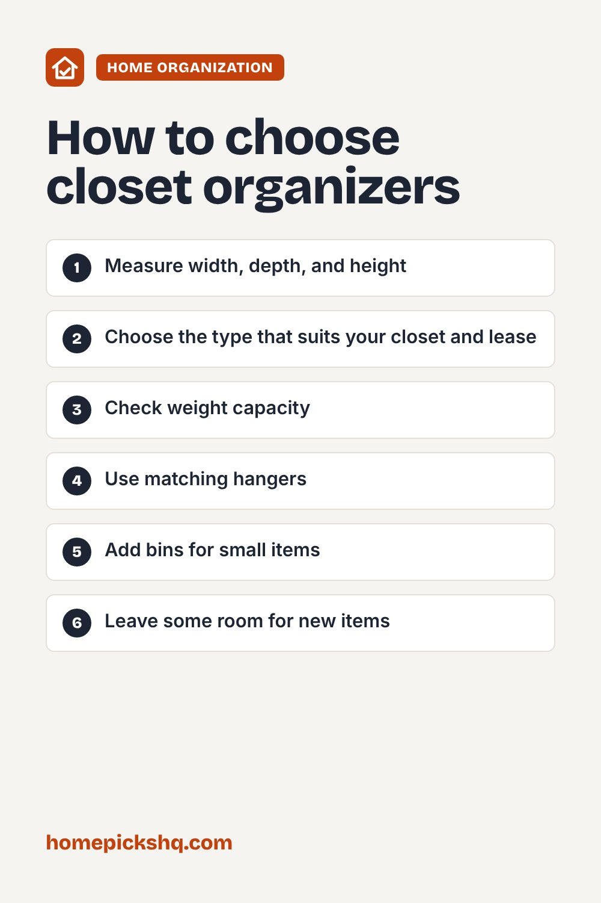

Best Closet Organizers: How to Fit More in Less Space

How we write these guides: we research manufacturer specifications, expert guidance, and owner feedback. We do not claim to have lab-tested every product. Links to Amazon on this page are affiliate links; see our disclosure.
A cluttered closet wastes space you already have. The right organizers use vertical space, keep clothes visible, and make getting dressed faster. This guide helps you plan before you buy.
Browse closet organizers on Amazon
Measure first
Measure the closet width, depth, and height, plus the rod height and the space between the rod and shelf. Note any obstacles like baseboards or sloped ceilings. Write these down so you can check product dimensions.
Declutter before you organize
Sort clothes into keep, donate, and storage piles. Organizers work best when they hold only what you actually wear. Group items by type, such as shirts, pants, and dresses, and then by color.
Types of organizers
Closet systems with adjustable rods, shelves, and drawers can customize the space, and many are tool-free. Hanging shelves add compartments for sweaters and bags without drilling. Double-hang rods use unused vertical space for shirts and pants. Over-the-door organizers hold shoes and accessories, and drawer units and bins keep small items contained.
Materials and weight
Wire is inexpensive and ventilated but can mark soft items. Wood and laminate look cleaner and carry more weight. Check the weight capacity, especially for shelves with folded jeans or sweaters.
Renter-friendly options
Tension rods, freestanding units, and over-the-door options avoid drilling. Some adhesive hooks work for light items, but read their weight limits carefully.
Hangers matter
Uniform slim hangers save space and make the closet look tidy. Use sturdier hangers for coats and suits, and padded or velvet ones for slippery fabrics.
Quick buying checklist
- Measure width, depth, and height
- Choose the type that suits your closet and lease
- Check weight capacity
- Use matching hangers
- Add bins for small items
- Leave some room for new items
See closet organizers on AmazonUse the checklist above to compare options. As an Amazon Associate I earn from qualifying purchases.

Frequently asked questions
How do I add storage without drilling?
Use freestanding shelves, tension rods, and over-the-door organizers.
Should I fold or hang?
Hang dresses, shirts, and suits. Fold knits and heavy sweaters to avoid stretching.
How often should I reorganize?
Each season, swap out off-season clothing.